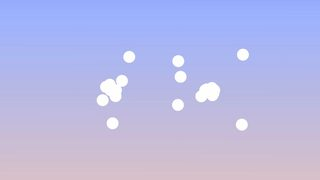
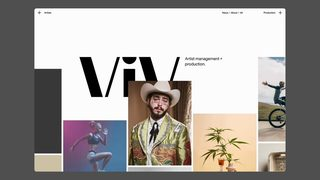

点封面在页面里播放（Vimeo / YouTube / X 需要代理；Vimeo 若没自动开始，再点一下播放键）。觉得好就点「喜欢」，有想法就写在下面的框里保存，我每天出日报前会读，存进偏好和审美库；会多找同类，但每天仍保持类型分散。
目录
- 0186 个零件拼出一台四缸发动机（three.js）
- 02flip to tip v2（按住按钮抛硬币打赏）
- 03iCloud+ 云朵循环（Apple，60fps 转发）
- 04Creative Reference Library（Awwwards 11-10 SOTD）
- 05INHERITED – ME, MYSELF & SAM 网站（GSAP SOTD）
- 06Google Security 品牌片
- 07Do not scroll（逐词滚动的动态字教程）
- 08Apple Pay 广告「The fast, easy, and secure way to pay」
- 09They might drill into King Tut's tomb…
- 10Justin Jefferson 官网（Awwwards 11-07 SOTD）
- －剔除（21 条，其中 2 条没下载到）
- 拆细拆：Kernel & Chai 发动机拼装
01代码动画3D质感
86 个零件拼出一台四缸发动机（three.js）
Shubham · Kernel & Chai（@KernelChai） · X 2026-11-09 【看过视频】
 X
X26 秒已下载，抽 12 帧加 32 帧密抽看过
作者说还没上贴图，材质是纯色金属
字体未识别（标题无衬线，计数是等宽体）
好在哪约 26 秒竖屏：深灰渐变底上，凸轮轴、气门弹簧、活塞、曲轴从上方一件件落下归位，左下角一行等宽小字计数「parts in place 2 / 86」一路跳到 86。装好后切成剖面，剖口描一圈细橙线，点火顺序 1-3-4-2 时缸里亮一下
可借讲任何「系统由哪些部分组成」都能照搬：零件按顺序落下拼成整体，角落放一个计数器，拼完再切剖面讲原理。标题两行，白字说事、橙字给重点
02UI动效代码动画
flip to tip v2（按住按钮抛硬币打赏）
jhey（@jh3yy） · X 2026-11-10 【看过画面（抽帧）】
22 秒已下载，抽 12 帧看过
注释字体是手写体，未识别
好在哪约 22 秒：黑底中间一个蓝色「/tip」按钮，按住后一枚金币从按钮里弹出、翻转、落回去。中段打开调试视图，用一串橙色虚线圆画出硬币的抛物线轨迹，旁边手写体注释「到顶点时离你最近，看起来最大」。作者说没用慢放，全靠缓动让硬币在顶点多停一下
可借想让一个动作的高光被看清，不用整段慢放，只在最高点用缓动多停几帧。讲动画原理时也可以学它的调试视图：把每一帧的位置画成一串圆
03UI动效3D质感
iCloud+ 云朵循环（Apple，60fps 转发）
Apple / 60fps（@60fpsdesign） · X 2026-11-11 【看过画面（抽帧）】
4 秒已下载，抽 12 帧看过
字体看着像 SF Pro，没核实
好在哪约 4 秒循环：手机网页里一朵蓝色磨砂玻璃云，照片、文件夹、邮件、头像等小图标从四周飞进云里，云被染成彩色、慢慢糊开，再收回成干净的蓝云。下面只有一行大字「It's peace of mind.」
可借讲「很多东西汇到一个地方」（比如数据进模型）：一个有厚度的玻璃主体，小图标飞进去被吸收，主体颜色跟着变，最后回到原样，正好做成无缝循环
04字体版式片头片尾转场
Creative Reference Library（Awwwards 11-10 SOTD）
@bamojk & Josh Bendall / Awwwards · X 2026-11-10 【看过画面（抽帧）】
6 秒已下载，抽 12 帧加 2–4 秒密抽看过
字体未识别（粗体无衬线）
好在哪约 6 秒：灰绿底上 C、R、L 三个黑字母从两边往中间收拢，拼成「CRL」后突然旋转放大，冲到镜头前变成几块巨大的黑色字形，直接当成首页的版式骨架，再淡入「CRL® /V.01 (2026)」
可借片头 logo 收尾：字母先排好，再放大到出画，放大后的字母局部直接当下一页的背景构图，比淡出切换更连贯。只用黑和一种灰绿
05转场UI动效
INHERITED – ME, MYSELF & SAM 网站（GSAP SOTD）
Eder Anaya、Adrien Lamy、Alex Boyd / GSAP · X 2026-11-10 【看过画面（抽帧）】
10 秒已下载，抽 12 帧加前 3 秒密抽看过
题材是乐队 EP 的调查叙事（证据墙），画面无血腥
字体未识别
好在哪约 10 秒：一支死核乐队的 EP 网站，做成暗房里的证据墙。开头一张撕碎的素描肖像，碎片带着毛边飞散又拼回去，留下裂缝。之后一束手电筒光圈扫过墙上钉着的照片，红线连着照片，字很小、留大片黑
可借做「拼凑真相」的段落：一张图撕成几块再拼回去，裂缝留着不抹掉。暗场里只用一个光圈照当前讲的那张图，别的都压暗
06MG3D质感
Google Security 品牌片
Trizz（巴塞罗那）× Across the Pond / Stash · Stash 2026-11-10 【看过画面（抽帧）】
67 秒已下载，抽 12 帧看过
中段元素偏多，没前后两段克制
好在哪约 67 秒：浅灰白的抽象工厂里，一个蓝色十字小零件一路穿过毛毡、纸板、散热片、六边形地砖搭成的机关，镜头跟着它走。材质都很实，毛绒、瓦楞、金属都分得清。结尾白底「Safer with Google」
可借讲看不见的系统（安全、网络、算法）时：选一个颜色最跳的小物件当主角，背景全用低饱和的实物材质，观众只要跟着这个颜色走就不会迷路
07字体版式代码动画
Do not scroll（逐词滚动的动态字教程）
Antoine Wodniack（@AntoineW）/ Codrops · X 2026-11-10 【看过画面（抽帧）】
5 秒已下载，抽 12 帧看过
拖尾是三色叠影，不是发光
字体未识别
好在哪约 5 秒：深紫底上一次只出一个词，「Do」「NOT」「SCROLL」，每个词带着橙粉紫的叠影拖尾滑进来，节奏像念出来一样。最后 SCROLL 的字母被一个个抛起、散落再收回
可借竖屏金句可以这样：一次一个词，按说话的节奏出，最后一个词的字母抛散收尾。GSAP 教程附代码，Remotion 里用 spring 加错帧也能做
08剪辑节奏实拍剪辑
Apple Pay 广告「The fast, easy, and secure way to pay」
Apple · YouTube 2026-11-09 【看过画面（抽帧）】
65 秒已下载，抽 12 帧看过
切点是 ffmpeg 场景检测估的，没听声音
好在哪65 秒的便利店动作喜剧：主角被一群人追着抢东西，镜头贴着人甩，切得很密（场景检测约 47 个切点，最快不到半秒一刀）。但每到手机付款那一下都给一个干净的特写停住，商品图和卡面看得清
可借实测视频的节奏可以这样排：前面怎么快都行，到关键操作那一下必须给一个静止特写，让观众看清，然后再接着快
09知识讲解3D质感
They might drill into King Tut's tomb…
Cleo Abram · X 2026-11-10 【看过画面（抽帧）】
52 秒已下载，抽 12 帧看过
中间有一段把文字打码的过渡
好在哪约 52 秒竖屏：米色纸面上一个立体的图坦卡蒙墓剖面模型，斜俯视，墙体有厚度和投影。荧光黄绿的箭头、编号和标签直接写在模型上，中间穿插雷达示意、地层剖面和 Cleo 出镜
可借讲结构或位置时：做一个斜俯视的立体剖面当「主场景」，每讲一点就回到它，只用一种荧光色标注。和你点过赞的地球箭头是同一套
10转场UI动效
Justin Jefferson 官网（Awwwards 11-07 SOTD）
Cam Duncalfe（@camduncalfe）/ Awwwards · X 2026-11-07 【看过画面（抽帧）】
X
10 秒已下载，抽 12 帧加前 4.5 秒密抽看过
发布 4 天，在 7 天内
字体未识别
好在哪约 10 秒：深紫底上一个白色 logo，一道斜切把画面劈开，后面是球员背影走进灯光隧道的实拍，接两个球场镜头。最后停在浅灰底的人物肖像，旁边签名一笔笔写出来，背景是半透明的大字
可借开场从 logo 到实拍：用一道斜切直接劈开，比淡入干脆。收尾放一个「签名书写」的动画，适合放作者署名或口号
剔除（21 条，其中 2 条没下载到）
Dominik Mészáros（@kcinimoDM） · 扁平后台截图平移，没有动效可学
apekshik（threejs 转发） · 标题卡衬线字不错，但主体是战机空战游戏，军事题材
kerstov（threejs 转发） · 科幻飞船舰队加彩色调试视图，偏技术炫技
Dominik Mészáros（@kcinimoDM） · 拱门日出配色好看，但它本身就是免费 Framer 模板，模板感重
Emil Kowalski · AI 编程技能文档推广，画面是灰色前后对比
Daniel Kiss / GSAP · 拼贴、贴纸、粉色堆满，不克制
NotReal / Motionographer · AI 产品广告，绿紫渐变和玻璃星星堆满
Balming Tiger（Vimeo Staff Pick） · 迷幻色彩的怪物定格，太花
Apple · 现场录音实拍，30 秒只有 7 个切点，没什么剪辑可学
Motionographer · YouTube 下载被机器人验证拦了，没看到画面，不写

odkotooi · 4 秒，两个白点炸开拼成点阵字再收回，干净但完全扁平，而且是复刻别家的 logo 动画

@lundqvistdallyn / Awwwards · 2.5 秒的照片网格换图，信息太少，已发布 5 天
今日细拆 · 代码动画（替换原定的口播出镜）
零件一件件落下：用计数器和剖面把「一个系统」讲清楚 【看过视频】完整看过 26.3 秒（含配乐）
Kernel & Chai 第一次用 three.js 做的发动机：86 个零件从上方落下拼成四缸机，然后剖开点火。整片不切镜头，只有一个机位慢慢绕和两次推拉，背景一片深灰，信息全靠零件归位的顺序、一个计数器和两行字。作者说还没上贴图，下一步才去 Blender 调金属和灯光。
结构（完整看过，秒数是大约值）
- 0–11 秒 拼装：零件从上方竖着落下，越过一点再弹回到位，每秒大约落 7、8 件，好几件同时在空中；标题「A car engine, / piece by piece.」和左下角计数「parts in place N / 86」（数字是橙色）一直在
- 11–16 秒 运转：计数到 86 的那一刻标题和计数器一起消失，正面外壳直接去掉变成剖面，切口描橙线；「Then it runs. / Firing order 1-3-4-2.」，缸里蓝色进气、橙色点火、灰色排气
- 16–22 秒 特写：镜头快速钻进一个气缸，停住后出「Spark, flame, / then the exhaust.」，左气门进蓝色颗粒，火花塞白闪一下变橙色火焰，右气门把烟排走
- 22–26 秒 收尾：镜头快速拉回同一个斜侧全景，出「2 crank turns. / Every cylinder fires once.」，发动机继续转着结束
- 底部一行小灰字署名全程不动
节奏
拼装段 11 秒占了快一半，零件密集落下，配乐是一串很快的拨弦合成器音，基本一件一个音；计数到 86 时重低音和鼓点进来，画面同时剖开开始运转，音乐换挡和画面换段在同一帧
后面三段每段 5、6 秒，节奏一样：镜头先动、停稳后约 1 秒再出字，字留到下一次镜头动之前
转场
- 整片不切镜头，同一个模型换状态：散件 → 拼好 → 剖面 → 气缸特写 → 全景
- 拼装时镜头一直慢慢向右绕、略往下压，停在斜侧角度；之后两次转场都是镜头快速推进和拉回，回到的是同一个机位
- 文字全是硬切，没有淡入淡出；标题总在镜头运动时消失、停稳后出现
颜色和字体（抽帧取色，近似值）
#45464A 背景上部#111113 背景底部#D89840 强调橙（第二行字、剖口描线）#F2F2F2 标题白字、金属高光
标题是无衬线体，计数和署名是等宽体，具体都未识别。
立体感从哪来
- 上亮下暗的竖向渐变背景，零件下方有一块柔和的接触阴影
- 零件是纯色金属材质（作者说没贴图），靠环境反射出白色高光，曲轴和弹簧的圆弧最明显
- 剖面：外壳切开一半，切口描一圈细橙线，里外层次一下分开
- 点火时只在燃烧室里放一个橙色点光，周围零件被照亮一圈
在 Three.js / Remotion 里怎么做（我的做法建议）
- 模型按装配顺序给每个零件编号，存一份「终点位置」和一个「起始高度」
- Remotion 里每个零件
delay = i * 间隔，用 spring({frame: frame - delay, config: {damping: 20}}) 从起始高度落到终点；计数器就是已经落完的零件数 - 背景用竖向渐变平面，地面放一张 ShadowMaterial 或烘焙好的接触阴影贴图
- 材质用 MeshStandardMaterial，metalness 0.9、roughness 0.3 左右，配一张 HDRI 环境贴图出高光
- 剖面用
material.clippingPlanes 切开外壳，切口的橙线可以另外画一圈 Line 或用 stencil 填色 - 点火：每个缸里放一个 PointLight，按 1-3-4-2 顺序把强度从 0 拉起再落下
- 镜头可以先固定，只做一点缓慢推近，别转来转去
放进鱼知道的片子里怎么用
讲 AI 产品或模型结构时，比如「一个大模型由哪几块组成」：每一块做成一个立体模块，按顺序落下拼成整体，角落计数「模块 3 / 7」，拼完剖开，用一个橙色亮点沿着数据流动的顺序走一遍。
它就是你评论过的「爆炸拆解可以参考」那一路，反过来做（从散件拼成整体），而且只用一种强调色，比 jhey 的拼图更克制。
看原帖 ↗